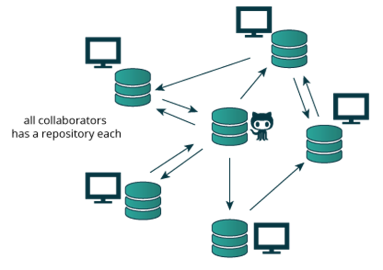

Source Code
28 February 2017
11:28
Background/Intro
Standard practice in development is to place all code into a source code repository. This allows develops to check out and work on changes to the code before they are merged back into the production code base. Source code repositories ensure that changes to code are auditable and can be peer reviewed before being merged into the production system.
Patterns
Pattern 1: Commit all source code to a central repository internal use

Deployment Guidelines
Sign up for a github account.
Create application project
Assign permissions to the repository
Allow developers to checkout and commit changes
Link to using github here…
Owner
ALM Team
Status
Awaiting team approval